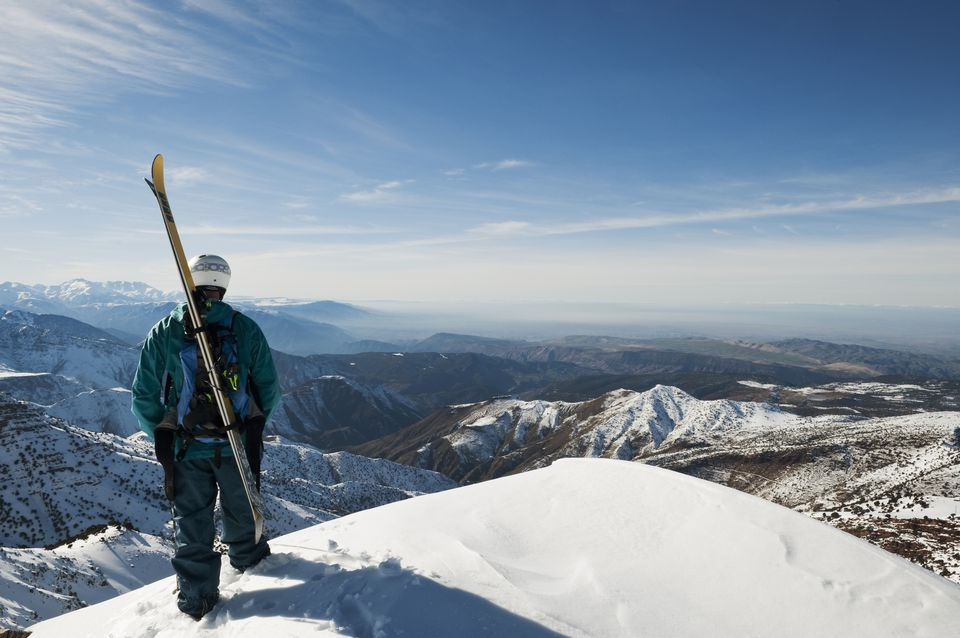
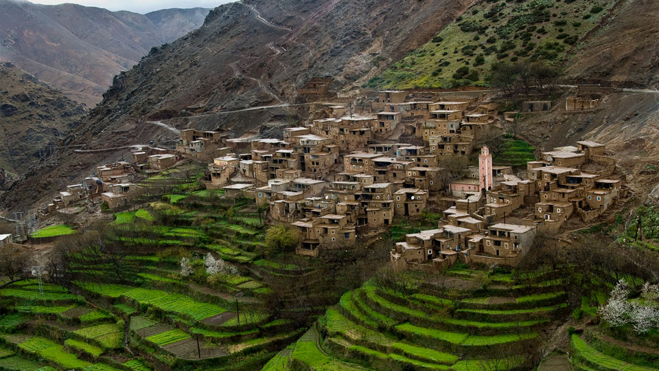
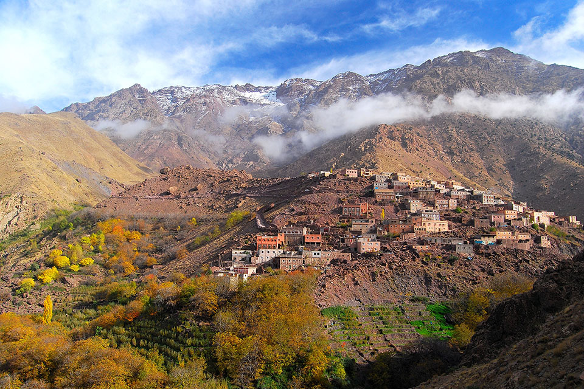

The Atlas Mountains are a prime destination for trekking, with routes to suit a wide range of capabilities.

Jebel Toubkal, situated in the High Atlas Mountains, is North Africa's highest peak at 13,667 feet/ 4,167 meters. It's a challenging trek to the summit, but worth it for the spectacular views.

While you can make it to the summit and back to the town of Imlil in a day, it's recommended that you take at least three days to acclimatize and enjoy the scenery. During the winter months, skiing and snowboarding enthusiasts should head to nearby Oukaïmeden ski resort.